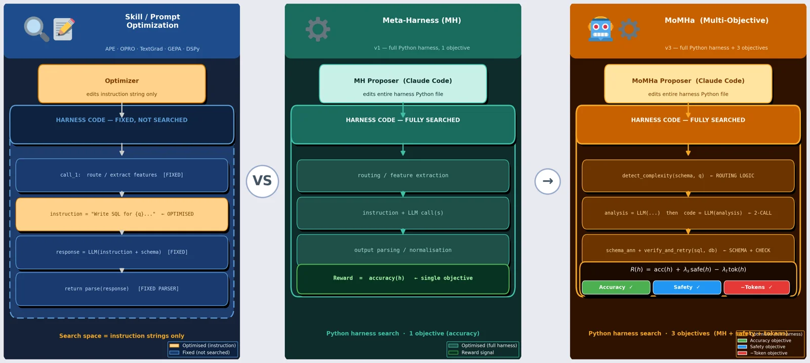
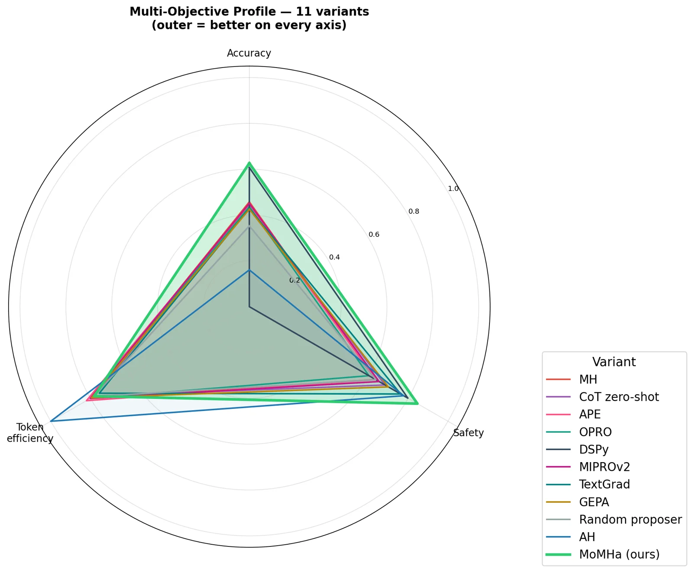
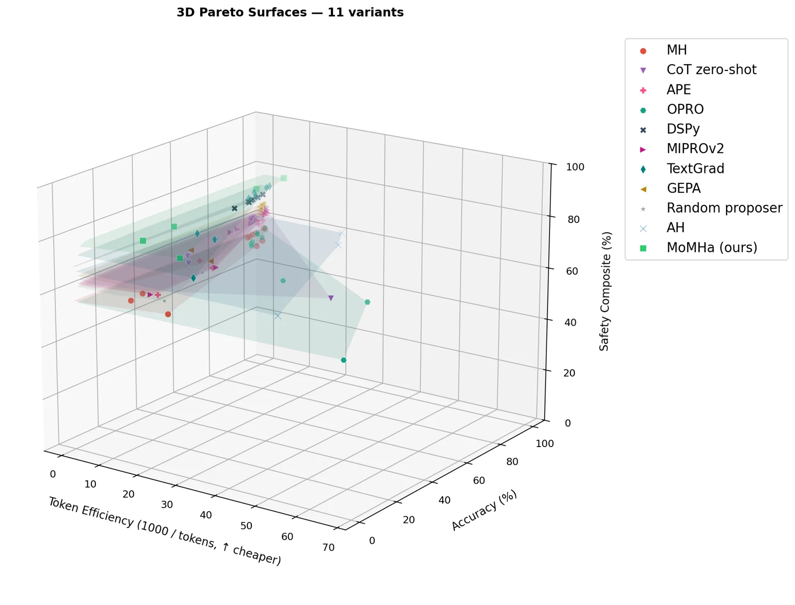
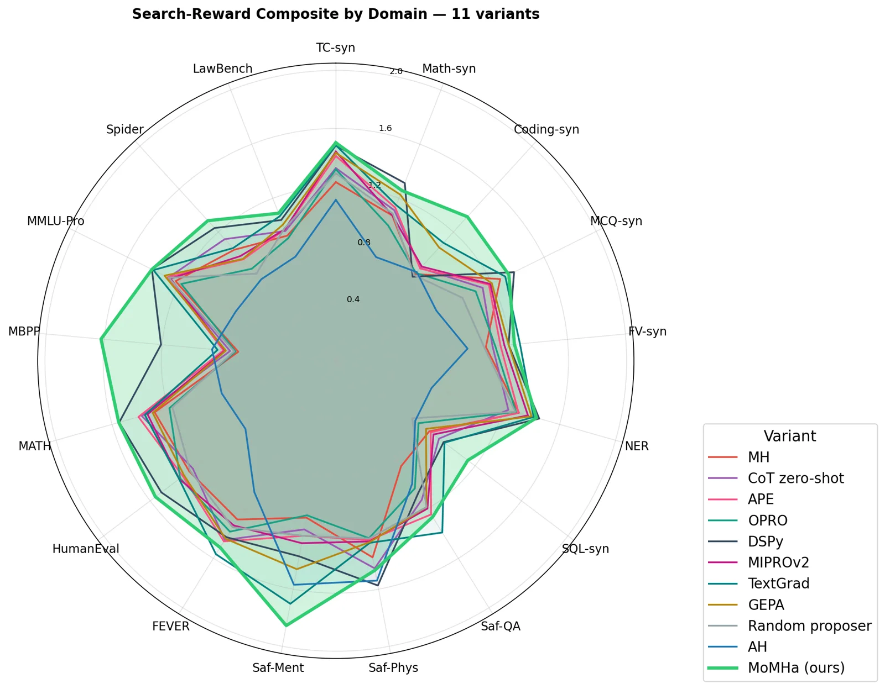
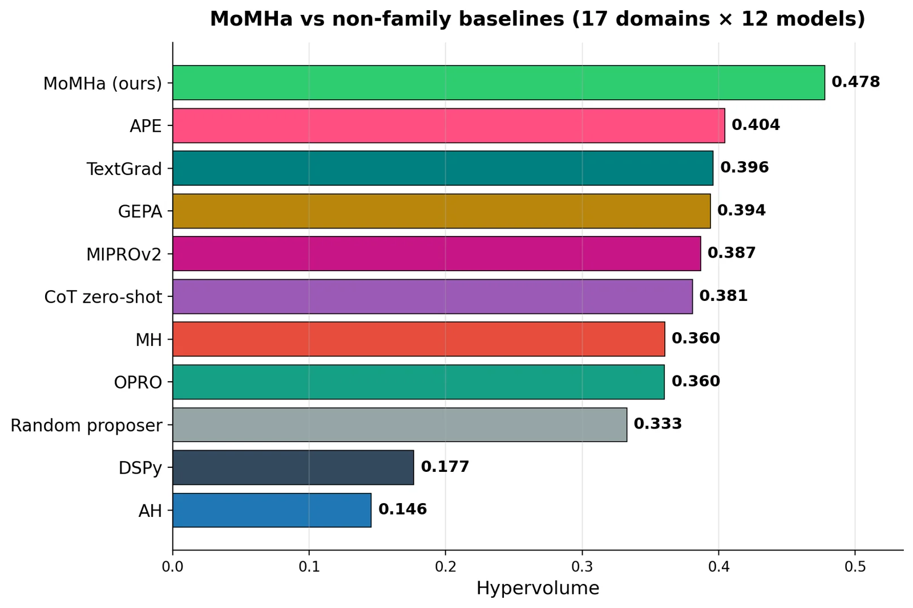

We treat the harness, the Python code around the model, as a first-class design surface and optimize it jointly for accuracy, safety, and token cost.
0domains
0target models
0baselines compared
0U-SafeBench safety, highest
Abstract
Most work on improving large language models treats accuracy as the sole objective. We argue that the
harness, the Python code surrounding the model that constructs prompts, routes calls, and parses outputs,
is a first-class design surface whose quality is inherently multi-objective: an accurate harness that
refuses no unsafe request, or that consumes an order of magnitude more tokens, is not a good harness. We present
Meta-Harness, a system that casts harness design as search over three per-domain objectives (accuracy, behavioural
safety, and token cost) solved by an agentic proposer (Claude Code) with full filesystem access to prior harness
source, execution traces, and scoring artifacts. Our central finding is that a single-phase joint-reward proposer
(MoMHa) outperforms every alternative, including a two-phase "accuracy then tokens" ablation,
scalar-only feedback, and an accuracy-only baseline. We evaluate on seventeen domains and a 12-model fleet spanning
four families. MoMHa attains the highest measured behavioural safety composite (U-SafeBench, 0.781) and uses
95 fewer tokens per example than the two-phase alternative.
Key Contributions
01
Harness search as multi-objective optimization
Harness design becomes search over per-domain accuracy, safety, and token cost, solved with a scalarized joint reward and an agentic proposer that reads traces and edits source.
02
Joint reward beats staged optimization
A single-phase joint reward beats a two-phase accuracy-then-tokens proposer by +2.7 overall points at 95 fewer tokens per example, and leads all 15 variants on 3D hypervolume (0.481).
03
Traces and safety skills matter
Scalar-only feedback lowers safety from 0.781 to 0.754. Removing the safety skill drops it to 0.716. All ten external baselines stay below 0.75.
How It Works
Click a stage to read what it does.

Main Results
Switch the track, and click a column header to sort.
MoMHa reaches a synthetic joint mean of 0.482 against 0.198–0.422 for ten baselines, a real-world mean of
0.461 against 0.377 for the strongest baseline (DSPy), and the best cross-model mean (0.434, best on 8 of 12 targets).
Pareto Analysis

Multi-objective comparison against ten baselines across accuracy, safety, and token cost.

Pareto surface over accuracy, safety, and token cost.

Per-domain composite comparison across all 17 axes.

3D hypervolume of accuracy, safety, and token trade-offs versus baselines.
BibTeX
@inproceedings{mukherjee2026momha,
title = {MoMHa: Multi-Objective Optimization of LLM Harnesses over Accuracy, Safety, and Tokens},
author = {Mukherjee, Subhojyoti and Tanjim, Md Mehrab},
booktitle = {Advances in Neural Information Processing Systems (NeurIPS)},
year = {2026},
note = {arXiv:2609.30967}
}